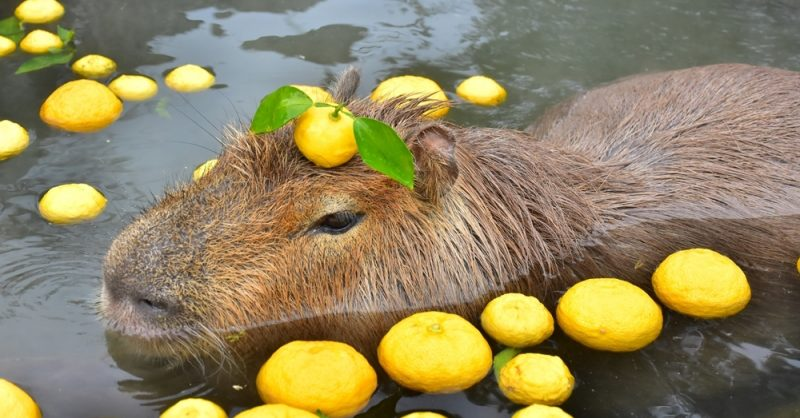

Капібари - королі спокою
Факт 1: Капібари - це найбільші гризуни у світі, вони можуть важити до 65 кг!
Факт 2: Капібари дуже товариські: вони дружать із птахами, черепахами, і навіть крокодилами!
Факт 3: У капібар є власні басейни. Вони обожнюють купатися і можуть залишатися під водою до 5 хвилин.
Смішний факт: Якщо у капібари поганий настрій, вона може просто заснути прямо посеред дня - ось це рівень релаксу!
Хобі капібар:
- Відпочинок у воді
- Спілкування з друзями
- Поїдання трави
- Дрімання під сонцем
Цікаві відео про капібар:
- "Капібара: наймиліший гризун", 2020
- "Капібари та їх друзі", 2021
- "Життя капібари у воді", 2019
- "Капібара: суперзірка TikTok", 2022
Капібара (лат. Hydrochoerus hydrochaeris) — травоїдний гризун, який живе у Південній Америці. Ці неймовірно спокійні істоти обожнюють воду й навіть можуть плавати краще за деяких людей! Їх улюблений режим дня — їсти, спати та інколи гратися. Деякі вчені жартують, що капібари — це живе втілення філософії дзен: вони не лише знаходять спільну мову з іншими тваринами, але й зовсім не поспішають у житті. Що може бути кращим, ніж відпочинок у воді після важкого "дня капібари"?
